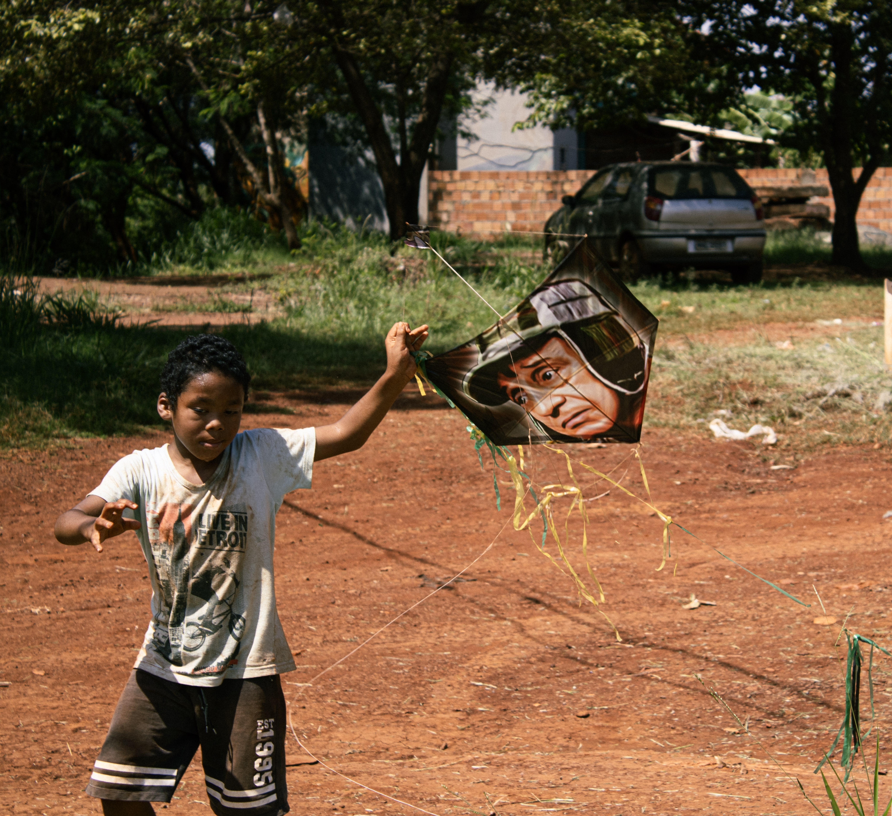

Um pedaço de algodão tensionado é a única estrutura que separa o voo da queda livre. Abaixo, o chão avermelhado demarca onde o direito à cidade esbarra no tijolo cru; no ar, ícones de papel tentam driblar o peso de quem nasce nas bordas do mapa. A linha repuxa. Onde o homem impõe o limite do passo, de quem é o vento que ousa cruzar a fronteira?